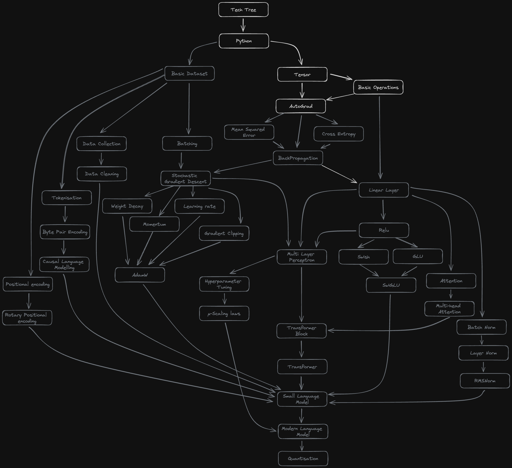
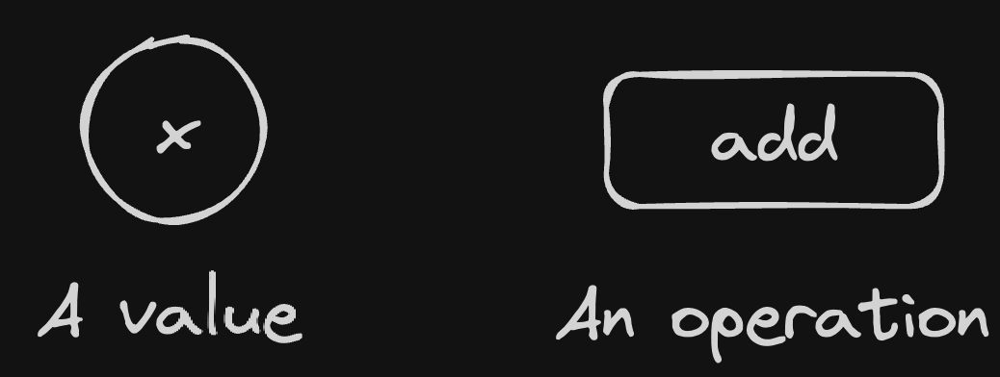
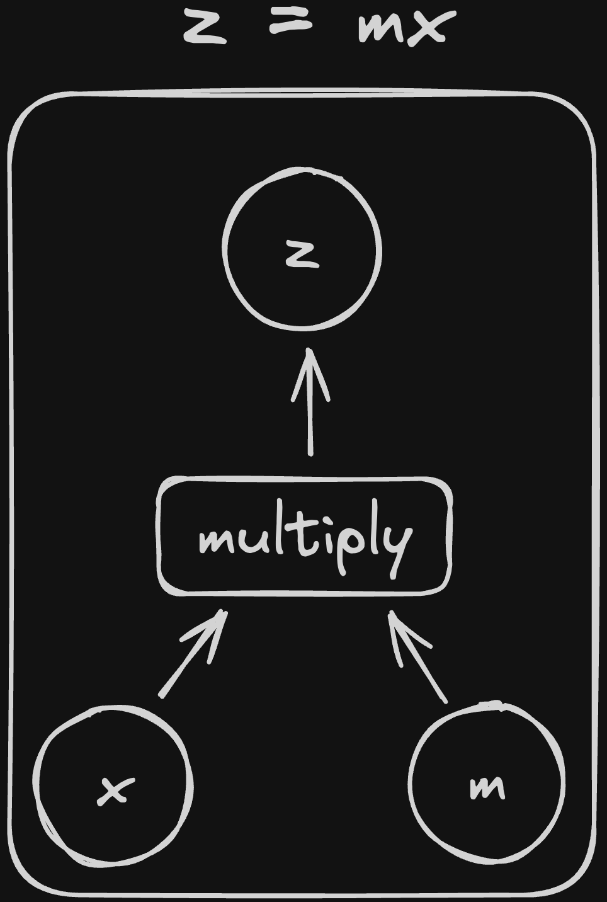
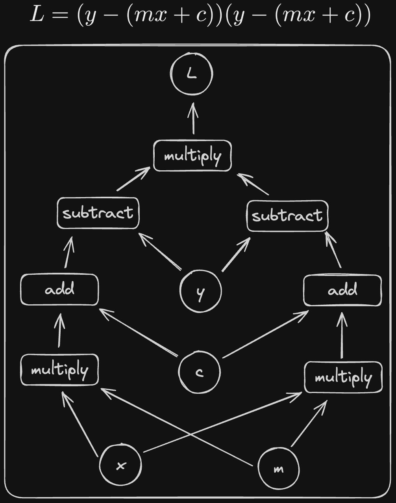
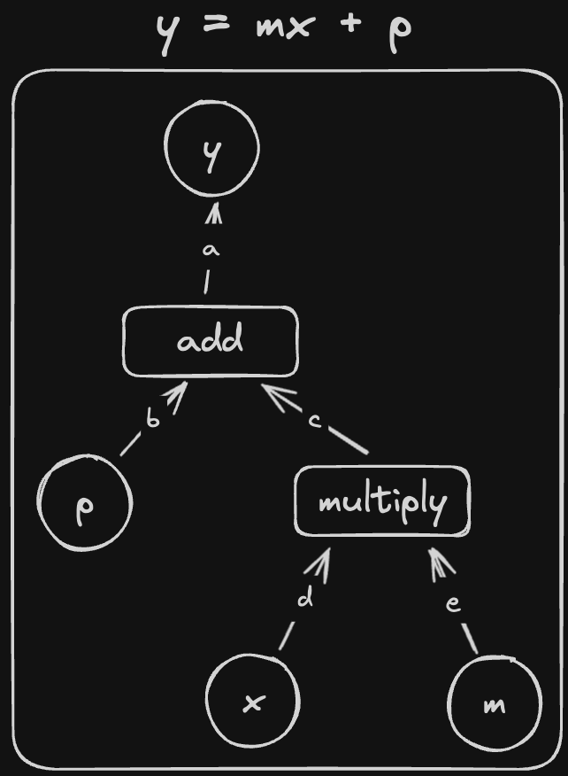
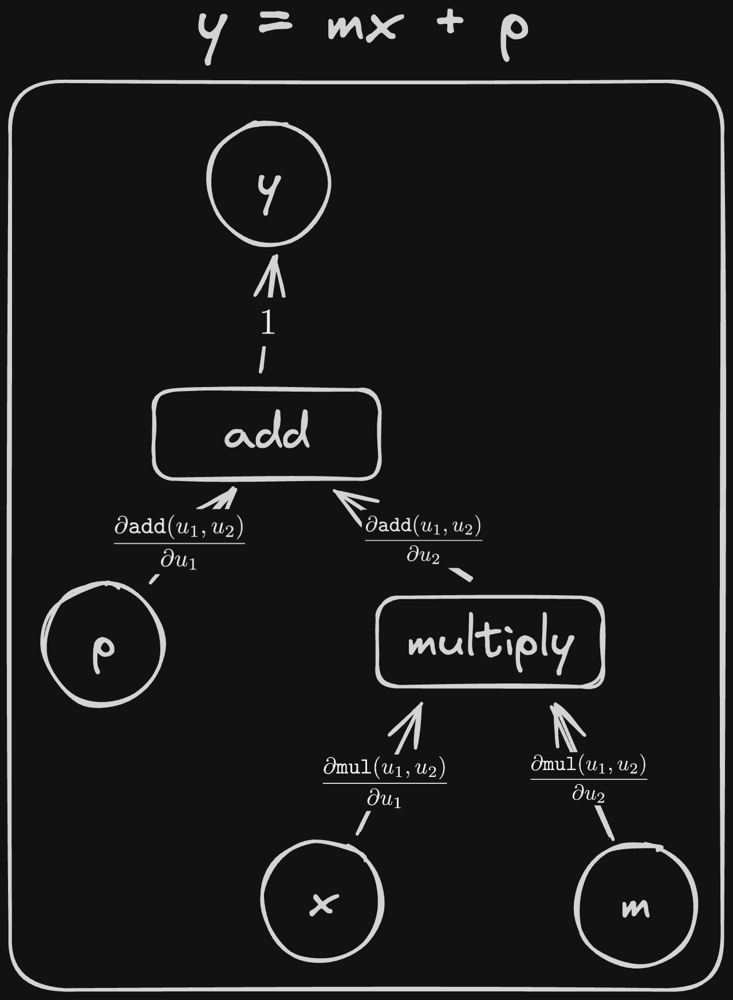
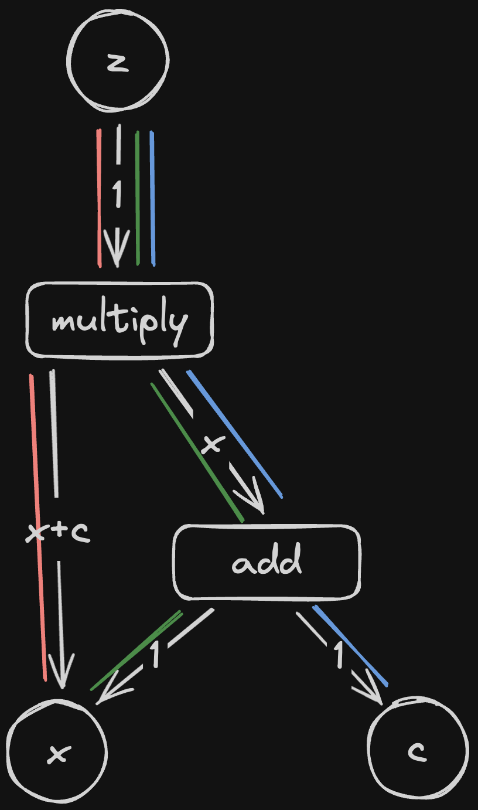
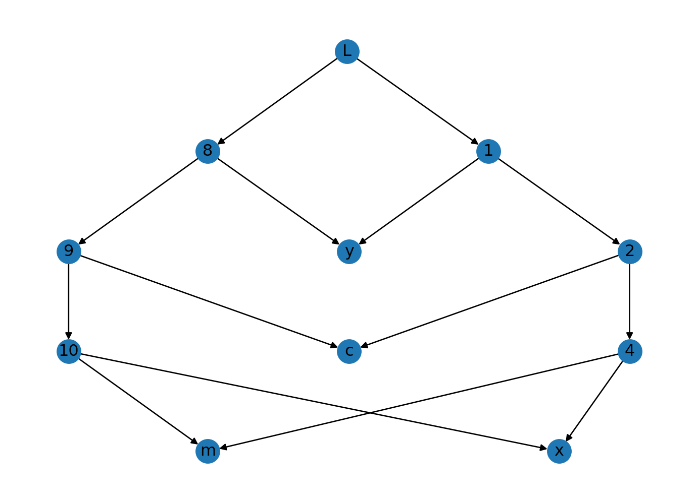

from typing import Any, Optional
import networkx as nxAutomatic Differentiation
One of the best things about the AI community is how open and accessible (with some notable exceptions, I’m looking at you “Open”AI) a lot of modern developments are. With a bit of python knowledge, you can go to huggingface, copy-paste some code, feed in some data and start training a state of the art language model. The whole process can be done in less than an hour and is a fantastic example of giving the public access to the latest research. Unfortunately, this ease of use is only possible by hiding a lot of important details which leaves people (me) with the feeling that there might be gaps in their knowledge.
I like to imagine deep learning research as a tree, with each new technique sprouting from the branches of earlier developments. To understand something new, you can read through the paper and every time you come across something you don’t understand, you can follow the tree back a few branches to get the necessary background and then continue with the paper.
I think that a lot of people who get into the field learn the basic theory (e.g gradient descent) and then jump to the cutting edge, filling in any gaps by following the branches backwards as they go. This is a great way to do useful things as fast as possible but also requires a lot of work to fill in the gaps every time new research comes out. Given the pace of development, it is easy to feel overwhelmed with everything that is going on.
To fix this issue, I want to start from the bottom of the tree and work up, building a modern language model with all the bells and whistles completely from scratch. Borrowing (shamelessly stealing) from computer games, I’ve built a tech tree of everything that I think I’ll need to implement to get a fully functional language model. If you think anything is missing, please let me know:

Before we can move onto building modern features like Rotary Positional Encodings, we first need to figure out how to differentiate with a computer. The backpropagation algorithm that underpins the entire field of Deep Learning requires the ability to differentiate the outputs of neural networks with respect to (wrt) their inputs. In this post, we’ll go from nothing to a (admittedly very limited) automatic differentiation library that can differentiate arbitrary functions of scalar values.
This one algorithm will form the core of out deep learning library that, eventually, will include everything we need to train a language model.
Creating a tensor
We can’t do any differentiation if we don’t have any numbers to differentiate. We’ll want to add some extra functionality that is in standard float types so we’ll need to create out own. Lets call it a Tensor.
class Tensor:
"""
Just a number (for now)
"""
value: float
def __init__(self, value: float):
self.value = value
def __repr__(self) -> str:
"""
Create a printable string representation of this
object
This function gets called when you pass a Tensor to print
Without this function:
>>> print(Tensor(5))
<__main__.Tensor at 0x104fd1950>
With this function:
>>> print(Tensor(5))
Tensor(5)
"""
return f"Tensor({self.value})"
# try it out
Tensor(5)Tensor(5)Next we’ll need some simple operations we want to perform: addition, subtraction and multiplication.
def _add(a: Tensor, b: Tensor):
"""
Add two tensors
"""
return Tensor(a.value + b.value)
def _sub(a: Tensor, b: Tensor):
"""
Subtract tensor b from tensor a
"""
return Tensor(a.value - b.value)
def _mul(a: Tensor, b: Tensor):
"""
Multiply two tensors
"""
return Tensor(a.value * b.value)We can use use our operations as follows:
def test(got: Any, want: Any):
"""
Check that two objects are equal to each other
"""
indicator = "✅" if want == got else "❌"
print(f"{indicator} - Want: {want}, Got: {got}")
a = Tensor(3)
b = Tensor(4)
test(_add(a, b).value, 7)
test(_sub(a, b).value, -1)
test(_mul(a, b).value, 12)✅ - Want: 7, Got: 7
✅ - Want: -1, Got: -1
✅ - Want: 12, Got: 12Scalar derivatives
Diving straight into differentiating matrices sounds too hard so lets start with something simpler: differentiating scalars. The simplest scalar derivative I can think of is the derivative of a tensor with respect to (wrt) itself: \[\frac{dx}{dx} = 1\]
A more interesting case is the derivative of two tensors added together (note we are using partial derivatives because our function has multiple inputs): \[f(x, y) = x + y\] \[\frac{\partial f}{\partial x} = 1\] \[\frac{\partial f}{\partial y} = 1\]
We can do a similar thing for multiplication and subtraction
| \(f(x, y)\) | \(\frac{\partial f}{\partial x}\) | \(\frac{\partial f}{\partial y}\) |
|---|---|---|
| \(x + y\) | \(1\) | \(1\) |
| \(x - y\) | \(1\) | \(-1\) |
| \(x \times y\) | \(y\) | \(x\) |
Now that we’ve worked out these derivatives mathematically, the next step is to convert them into code. In the table above, when we make a tensor by combining two tensors with an operation, the derivative only ever depends on the inputs and the operation. There is no “hidden state”.
This means that the only information we need to store is the inputs to an operation and a function to calculate the derivative wrt each inputs. With this, we should be able to differentiate any binary function wrt its inputs. A good place to store this information is in the tensor that is produced by the operation.
We’ll add some new attributes to our Tensor: args and local_derivatives. If the tensor is the output of an operation, then args will store the arguments to the operation and local_derivatives will store the derivatives wrt each input. We’re calling it local_derivatives to avoid confusion when we start nesting functions.
Once we’ve calculated the derivative (from our args and local_derivatives) we’ll need to store it. It turns out that the neatest place to put this is in tensor that the output is being differentiated wrt. We’ll call this derivative
class Tensor:
"""
A number that can be differentiated
"""
# If the tensor was made by an operation, the operation arguments
# are stored in args
args: tuple["Tensor"] = ()
# If the tensor was made by an operation, the derivatives wrt
# operation inputs are stored in derivatives
local_derivatives: tuple["Tensor"] = ()
# The derivative we have calculated
derivative: Optional["Tensor"] = None
def __init__(self, value: float):
self.value = value
def __repr__(self) -> str:
"""
Create a printable string representation of this
object
This function gets called when you pass a Tensor to print
Without this function:
>>> print(Tensor(5))
<__main__.Tensor at 0x104fd1950>
With this function:
>>> print(Tensor(5))
Tensor(5)
"""
return f"Tensor({self.value})"For example, if we have
a = Tensor(3)
b = Tensor(4)
output = _mul(a, b)Then output.args and output.local_derivatives should be equal to should be set to:
output.args == (Tensor(3), Tensor(4))
output.derivatives == (
b, # derivative of output wrt a is b
a, # derivative of output wrt b is a
)Once we have actually computed the derivatives, then the derivative of output wrt a will be stored in a.derivative and should be equal to b (which is 4 in this case).
We know that we’ve done everything right once these tests pass:
a = Tensor(3)
b = Tensor(4)
output = _mul(a, b)
# TODO: differentiate here
test(got=output.args, want=(a, b))
test(got=output.local_derivatives, want=(b, a))
test(a.derivative, b)
test(b.derivative, a)❌ - Want: (Tensor(3), Tensor(4)), Got: ()
❌ - Want: (Tensor(4), Tensor(3)), Got: ()
❌ - Want: Tensor(4), Got: None
❌ - Want: Tensor(3), Got: NoneFirst, lets add a function to our Tensor that will actually calculate the derivatives for each of the function arguments. Pytorch calls this function backward so we’ll do the same.
class Tensor:
"""
A number that can be differentiated
"""
# If the tensor was made by an operation, the operation arguments
# are stored in args
args: tuple["Tensor"] = ()
# If the tensor was made by an operation, the derivatives wrt
# operation inputs are stored in
local_derivatives: tuple["Tensor"] = ()
# The derivative we have calculated
derivative: Optional["Tensor"] = None
def __init__(self, value: float):
self.value = value
def backward(self):
if self.args is None or self.local_derivatives is None:
raise ValueError(
"Cannot differentiate a Tensor that is not a function of other Tensors"
)
for arg, derivative in zip(self.args, self.local_derivatives):
arg.derivative = derivative
def __repr__(self) -> str:
"""
Create a printable string representation of this
object
This function gets called when you pass a Tensor to print
Without this function:
>>> print(Tensor(5))
<__main__.Tensor at 0x104fd1950>
With this function:
>>> print(Tensor(5))
Tensor(5)
"""
return f"Tensor({self.value})"This only works if we also store the arguments and derivatives in the output tensors of operations
def _add(a: Tensor, b: Tensor):
"""
Add two tensors
"""
result = Tensor(a.value + b.value)
result.local_derivatives = (Tensor(1), Tensor(1))
result.args = (a, b)
return result
def _sub(a: Tensor, b: Tensor):
"""
Subtract tensor b from a
"""
result = Tensor(a.value - b.value)
result.local_derivatives = (Tensor(1), Tensor(-1))
result.args = (a, b)
return result
def _mul(a: Tensor, b: Tensor):
"""
Multiply two tensors
"""
result = Tensor(a.value * b.value)
result.local_derivatives = (b, a)
result.args = (a, b)
return resultLets re-run our tests and see if it works
a = Tensor(3)
b = Tensor(4)
output = _mul(a, b)
output.backward()
test(got=output.args, want=(a, b))
test(got=output.local_derivatives, want=(b, a))
test(a.derivative, b)
test(b.derivative, a)✅ - Want: (Tensor(3), Tensor(4)), Got: (Tensor(3), Tensor(4))
✅ - Want: (Tensor(4), Tensor(3)), Got: (Tensor(4), Tensor(3))
✅ - Want: Tensor(4), Got: Tensor(4)
✅ - Want: Tensor(3), Got: Tensor(3)So far so good, lets try nesting operations.
a = Tensor(3)
b = Tensor(4)
output_1 = _mul(a, b)
# z = a + (a * b)
output_2 = _add(a, output_1)
output_2.backward()
# should get
# dz/db = 0 + a = a
test(b.derivative, a)❌ - Want: Tensor(3), Got: NoneSomething has gone wrong.
We should have got a as the derivative for b but we got 0 instead. Looking through the .backward() function, the issue is pretty clear: we haven’t thought about nested functions. To get this example working, we’ll need to figure out how to calculate derivatives through multiple functions instead of just one.
Chaining Functions Together
To calculate derivates of nested functions, we can use a rule from calculus: The Chain Rule.
For a variable \(z\) generated by nested functions \(f\) and \(g\) such that \[z = f(g(x))\]
Then the derivative of \(z\) wrt \(x\) is: \[\frac{\partial z}{\partial x} = \frac{\partial f(u)}{\partial u} \frac{\partial g(x)}{\partial x}\]
Here, \(u\) is a dummy variable. \(\frac{\partial f(u)}{\partial u}\) means the derivative of \(f\) wrt its input.
For example, if
\[f(x) = g(x)^2\] Then we can define \(u=g(x)\) and rewrite \(f\) in terms of u \[f(u) = u^2 \implies \frac{\partial f(u)}{\partial u} = 2u = 2 g(x)\]
Multiple Variables
The chain rule works as you might expect for functions of multiple variables. When differentiating wrt a variable, we can treat the other variables as constant and differentiate as normal \[z = f(g(x), h(y))\]
\[\frac{\partial z}{\partial x} = \frac{\partial f(u)}{\partial u} \frac{\partial g(x)}{\partial x}\] \[\frac{\partial z}{\partial y} = \frac{\partial f(u)}{\partial u} \frac{\partial h(y)}{\partial y}\]
If we have different functions that take the same input, we differentiate each of them individually and then add them together
\[z = f(g(x), h(x))\]
We get \[\frac{\partial z}{\partial x} = \frac{\partial f(u)}{\partial u}\frac{\partial g(x)}{\partial x} + \frac{\partial f(u)}{\partial u}\frac{\partial h(x)}{\partial x}\]
More than 2 functions
If we chain 3 functions together, we still just multiply the derivatives for each function together:
\[\frac{\partial z}{\partial x} = \frac{\partial f(u)}{\partial u} \frac{\partial g(x)}{\partial x} = \frac{\partial f(u)}{\partial u} \frac{\partial g(u)}{\partial u}\frac{\partial h(x)}{\partial x}\]
And this generalises to any amount of nesting
\[z = f_1(f_2(....f_{n-1}(f_n(x))...)) \implies \frac{\partial z}{\partial x} = \frac{\partial f_1(u)}{\partial u}\frac{\partial f_2(u)}{\partial u}...\frac{\partial f_{n-1}(u)}{\partial u}\frac{\partial f_{n}(x)}{\partial x}\]
A picture is worth a thousand equations
As you probably noticed, the maths is starting to get quite dense. When we start working with neural networks, we can easily get 100s or 1000s of functions deep so to get a handle on things, we’ll need a different strategy. Helpfully, there is one: turning it into a graph.
We can start with some rules:
Variables are represented with circles and operations are represented with boxes

Inputs to an operation are represented with arrows that point to the operation box. Outputs point away.
For example, here is the diagram for \(z = mx\)

And thats it! All of the equations we’ll be working with can be represented graphically using these simple rules. To try it out, let’s draw the diagram for a more complex formula:

This is an example of a structure called a graph (also called a network). A lot of problem in computer science get much easier if you can represent them with a graph and this is no exception.
The real power of these diagrams is that they can also help us with our derivatives. Take \[y = mx + p = \texttt{add}(p, \texttt{mul}(m ,x)).\]
From before, we can find its derivatives by differentiating each operation wrt its inputs and multiplying the results together. In this case, we get: \[\frac{\partial y}{\partial p} = \frac{\partial \texttt{add}(u_1, u_2)}{\partial u_1} = 1\] \[\frac{\partial y}{\partial m} = \frac{\partial \texttt{add}(u_1, u_2)}{\partial u_2}\frac{\partial \texttt{mul}(u_1, u_2)}{\partial u_2} = 1 \times x = x\] \[\frac{\partial y}{\partial x} = \frac{\partial \texttt{add}(u_1, u_2)}{\partial u_2}\frac{\partial \texttt{mul}(u_1, u_2)}{\partial u_1} = 1 \times m = m\]
We can also graph it like this:

If you imagine walking from \(y\) to each of the inputs, you might notice a similarity between the edges you pass through and the equations above. If you walk from \(y\) to \(x\), you’ll pass through a->c->d. Similarly, if you walk from \(y\) to \(m\), you’ll pass through a->d->e. Notice that both paths go through c, the edge coming out of add that corresponds to the input \(u_2\). Also, both equations include the term \(\frac{\partial \texttt{add}(u_1, u_2)}{\partial u_2}\).
If I rename the edges as follows:

We can see that going from \(y\) to \(x\), we pass through \(1\), \(\frac{\partial \texttt{add}(u_1, u_2)}{\partial u_2}\) and \(\frac{\partial \texttt{mul}(u_1, u_2)}{\partial u_1}\). If we multiply these together, we get exactly \(\frac{\partial \texttt{add}(u_1, u_2)}{\partial u_2}\frac{\partial \texttt{mul}(u_1, u_2)}{\partial u_1} = \frac{\partial y}{\partial x}\)!
It turns out that this rule works in general:
If we have some operation \(\texttt{op}(u_1, u_2, ..., u_n)\), we should label the edge corresponding to input \(u_i\) with \(\frac{\partial \texttt{op}(u_1, u_2, ..., u_n)}{\partial u_i}\)
Then, if we want to find the derivative of the output node wrt any of the inputs,
The derivative of an output variable wrt one of the input variables can be found by traversing the graph from the output to the input and multiplying together the derivatives for every edge on the path
To cover every edge case, there are some extra details
If a graph contains multiple paths from the output to an input, then the derivative is the sum of the products for each path
This comes from the case we saw earlier where when we have different functions that have the same input we have to add their derivative chains together.
If an edge is not the input to any function, its derivative is 1
This covers the edge that leads from the final operation to the output. You can think of the edge having the derivative \(\frac{\partial y}{\partial y}=1\)
And thats it! Lets try it out with \(z = (x + c)x\):

Here, instead of writing the formulae for each derivative, I have gone ahead and calculated their actual values. Instead of just figuring out the formulae for a derivative, we want to calculate its value when we plug in our input parameters.
All that remains is to multiply the local derivatives together along each path. We’ll call the product of derivatives along a single path a chain (after the chain rule)
We can get from \(z\) to \(x\) via the green path and the red path. Following these paths, we get: \[\text{red path} = 1 \times (x + c) = x + c\] Along the green path we get: \[\text{green path} = 1 \times x \times 1 = x\]
Adding these together, we get \((x+c) + x = 2x + c\)
If we work out the derivative algebraically:
\[\frac{\partial z}{\partial x} = \frac{\partial}{\partial x}((x+c)x) = \frac{\partial}{\partial x}(x^2 + cx) = \frac{\partial x^2}{\partial x} + c\frac{\partial x}{\partial x} = 2x + c\]
We can see that it seems to work! (Calculating \(\frac{\partial z}{\partial c}\) is left as an exercise for the reader)
To summarise, we have invented the following algorithm for calculating of a variable wrt its inputs:
- Turn the equation into a graph
- Label each edge with the appropriate derivative
- Find every path from the output to the input variable you care about
- Follow each path and multiply the derivatives you pass through
- Add together the results for each path
We have an algorithm in pictures and words, lets turn it into code.
The Algorithm™
Suprisingly, we have actually already converted our functions into graphs. If you recall, when we generate a tensor from an operation, we record the inputs to the operation in the output tensor (in .args). We also stored the functions to calculate derivatives for each of the inputs in .local_derivatives which means that we know both the destination and derivative for every edge that points to a given node. This means that we’ve already completed steps 1 and 2.
The next challenge is to find all paths from the tensor we want to differentiate to the input tensors that created it. Because none of our operations are self referential (outputs are never fed back in as inputs), and all of our edges have a direction, our graph of operations is a directed acyclic graph or DAG. The property of the graph having no cycles means that we can find all paths to every parameter pretty easily with a Breadth First Search (or Depth First Search but BFS makes some optimisations easier as we’ll see in part 2).
To try it out, lets recreate that giant graph we made earlier. We can do this by first calculating \(L\) from the inputs
y = Tensor(1)
m = Tensor(2)
x = Tensor(3)
c = Tensor(4)
# L = (y - (mx + c))^2
left = _sub(y, _add(_mul(m, x), c))
right = _sub(y, _add(_mul(m, x), c))
L = _mul(left, right)
# Attaching names to tensors will make our
# diagram look nicer
y.name = "y"
m.name = "m"
x.name = "x"
c.name = "c"
L.name = "L"And then using Breadth First Search to do 3 things: - Find all nodes - Find all edges - Find all paths from \(L\) to our parameters
We haven’t implemented a simple way to check whether two tensors are identical so we’ll need compare hashes.
edges = []
stack = [(L, [L])]
nodes = []
edges = []
while stack:
node, current_path = stack.pop()
# Record nodes we haven't seen before
if hash(node) not in [hash(n) for n in nodes]:
nodes.append(node)
# If we have reached a parameter (it has no arguments
# because it wasn't created by an operation) then
# record the path taken to get here
if not node.args:
if not hasattr(node, "paths"):
node.paths = []
node.paths.append(current_path)
continue
for arg in node.args:
stack.append((arg, current_path + [arg]))
# Record every new edge
edges.append((hash(node), hash(arg)))Now we’ve got all of the edges and nodes, we have complete knowledge of our computational graph. Lets use networkx to plot it
# Assign a unique integer to each
# unnamed node so we know which
# node is which in the picture
labels = {}
for i, node in enumerate(nodes):
if hasattr(node, "name"):
labels[hash(node)] = node.name
else:
labels[hash(node)] = str(i)
graph = nx.DiGraph()
graph.add_edges_from(edges)
pos = nx.nx_agraph.pygraphviz_layout(graph, prog="dot")
nx.draw(graph, pos=pos, labels=labels)
If you squint a bit, you can see that this looks like to the graph we made earlier! Lets take a look at the paths the algorithm found from \(L\) to \(x\).
for path in x.paths:
steps = []
for step in path:
steps.append(labels[hash(step)])
print("->".join(steps))L->1->2->4->x
L->8->9->10->xThe paths look correct! All we need to do now is to modify the algorithm a bit to keep track of the chain of derivatives along each path.
y = Tensor(1)
m = Tensor(2)
x = Tensor(3)
c = Tensor(4)
# L = (y - (mx + c))^2
left = _sub(y, _add(_mul(m, x), c))
right = _sub(y, _add(_mul(m, x), c))
L = _mul(left, right)
y.name = "y"
m.name = "m"
x.name = "x"
c.name = "c"
L.name = "L"stack = [(L, [L], [])]
nodes = []
edges = []
while stack:
node, current_path, current_chain = stack.pop()
# Record nodes we havent seen before
if hash(node) not in [hash(n) for n in nodes]:
nodes.append(node)
# If we have reached a parameter (it has no arguments
# because it wasn't created by an operation) then
# record the path taken to get here
if not node.args:
if not hasattr(node, "paths"):
node.paths = []
node.paths.append(current_path)
if not hasattr(node, "chains"):
node.chains = []
node.chains.append(current_chain)
continue
for arg, op in zip(node.args, node.local_derivatives):
next_node = arg
next_path = current_path + [arg]
next_chain = current_chain + [op]
stack.append((arg, next_path, next_chain))
# Record every new edge
edges.append((hash(node), hash(arg)))Lets check if the derivatives were recorded correctly.
print(f"Number of chains: {len(x.chains)}")
for chain in x.chains:
print(chain)Number of chains: 2
[Tensor(-9), Tensor(-1), Tensor(1), Tensor(2)]
[Tensor(-9), Tensor(-1), Tensor(1), Tensor(2)]Looks reasonable so far. We have 2 identical paths, each with 4 derivatives (one for each edge in the path) as expected.
Lets multiply the derivatives together along each path and add the total for each path together and see if we get the right answer.
According my calculations (and Wolfram Alpha) the derivative of \(L\) wrt \(x\) is: \[\frac{\partial L}{\partial x} = 2m (c + mx - y)\] Plugging the values for our tensors in, we get \[2\times2 (4 + (2\times3) - 1) = 36\]
total_derivative = Tensor(0)
for chain in x.chains:
chain_total = Tensor(1)
for step in chain:
chain_total = _mul(chain_total, step)
total_derivative = _add(total_derivative, chain_total)
total_derivativeTensor(36)The correct answer! It looks like our algorithm works. All that remains is to put all the peices together.
Putting it all together
When dreaming up the algorithm, we kept a record of the nodes, edges and paths which made plotting and debugging easier. Now that we know that it works, we can remove these and simplify things a bit.
def backward(root_node: Tensor) -> None:
stack = [(root_node, [])]
while stack:
node, current_derivative = stack.pop()
# if we have reached a parameter (it has no arguments
# because it wasn't created by an operation) then
# record the path taken to get here
if not node.args:
if not hasattr(node, "chain"):
node.chain = []
node.chain.append(current_derivative)
continue
for arg, op in zip(node.args, node.local_derivatives):
stack.append((arg, current_derivative + [op]))There is also no need (for now) to store the derivatives and calculate them separately. Instead, we can avoid a bunch of repeated calculations by multiplying the derivatives as we go.
def backward(root_node: Tensor) -> None:
stack = [(root_node, Tensor(1))]
while stack:
node, current_derivative = stack.pop()
# if we have reached a parameter (it has no arguments
# because it wasn't created by an operation) then add the
# derivative
if not node.args:
if node.derivative is None:
node.derivative = current_derivative
else:
node.derivative = _add(node.derivative, current_derivative)
continue
for arg, derivative in zip(node.args, node.local_derivatives):
stack.append((arg, _mul(current_derivative, derivative)))Lets make sure we didn’t break anything
y = Tensor(1)
m = Tensor(2)
x = Tensor(3)
c = Tensor(4)
left = _sub(y, _add(_mul(m, x), c))
right = _sub(y, _add(_mul(m, x), c))
L = _mul(left, right)
backward(L)
print(f"{x.derivative = }\n")
test(got=x.derivative.value, want=36)x.derivative = Tensor(36)
✅ - Want: 36, Got: 36Lets put this algorithm into our Tensor object
class Tensor:
"""
A float that can be differentiated
"""
args: tuple[Tensor] = ()
local_derivatives: tuple[Tensor] = ()
# The derivative (once we've calculated it). This is None if the derivative
# has not been computed yet
derivative: Tensor | None = None
def __init__(self, value: float):
self.value = value
def __repr__(self) -> str:
return f"Tensor({self.value.__repr__()})"
def backward(self):
if self.args is None or self.local_derivatives is None:
raise ValueError(
"Cannot differentiate a Tensor that is not a function of other Tensors"
)
stack = [(self, Tensor(1))]
while stack:
node, current_derivative = stack.pop()
# if we have reached a parameter (it has no arguments
# because it wasn't created by an operation) then add the
# derivative
if not node.args:
if not hasattr(node, "derivative") or node.derivative is None:
node.derivative = Tensor(0)
node.derivative = _add(node.derivative, current_derivative)
continue
for arg, derivative in zip(node.args, node.local_derivatives):
new_derivative = _mul(current_derivative, derivative)
stack.append((arg, new_derivative))Lets try it out
y = Tensor(1)
m = Tensor(2)
x = Tensor(3)
c = Tensor(4)
left = _sub(y, _add(_mul(m, x), c))
right = _sub(y, _add(_mul(m, x), c))
L = _mul(left, right)
L.backward()
test(x.derivative, Tensor(36))❌ - Want: Tensor(36), Got: Tensor(36)Huh?
By default, if you compare two objects in python with ==, python will check whether the object on the left has the same reference as the object as the one on the right. Because Tensor(36) is a different object (with the same value) as x.derivative, x.derivative == Tensor(36) returns False.
It makes a lot more sense to compare two tensors based upon their .value. To achieve this, we can add the __eq__ special method to Tensor which will change the behaviour of the == operator for Tensor objects
def __eq__(self, other) -> bool:
"""
Tells python to compare .value when applying the `==`
operation to two tensors instead of comparing references
"""
if not isinstance(other, "Tensor"):
raise TypeError(f"Cannot compare a Tensor with a {type(other)}")
return self.value == other.valueSimilarly, if we try to use +, - or * on our tensors, we’ll get an error. We can tell python how to do these operations on our tensors by definining the following special functions: - __add__ lets us use + - __sub__ lets us use - - __mul__ lets us use *
def __add__(self, other) -> Tensor:
if not isinstance(other, "Tensor"):
raise TypeError(f"Cannot add a Tensor to a {type(other)}")
return _add(self, other)
def __sub__(self, other) -> Tensor:
if not isinstance(other, "Tensor"):
raise TypeError(f"Cannot subtract a Tensor from a {type(other)}")
return _sub(self, other)
def __mul__(self, other) -> Tensor:
if not isinstance(other, "Tensor"):
raise TypeError(f"Cannot multiply a Tensor with a {type(other)}")
return _mul(self, other)Finally, we can add the __iadd__, __isub__ and __imul__ methods to allow us to use +=, -= and *=.
def __iadd__(self, other) -> Tensor:
self = self.__add__(self, other)
return self
def __isub__(self, other) -> Tensor:
self = self.__sub__(self, other)
return self
def __imul__(self, other) -> Tensor:
self = self.__mul__(self, other)
return selfWhile we’re here, lets clean up our backward function a bit by replacing the ugly _add and _mul operations with + and *.
def backward(self):
if self.args is None or self.local_derivatives is None:
raise ValueError(
"Cannot differentiate a Tensor that is not a function of other Tensors"
)
stack = [(self, Tensor(1))]
while stack:
node, current_derivative = stack.pop()
# if we have reached a parameter (it has no arguments
# because it wasn't created by an operation) then add the
# derivative
if not node.args:
if node.derivative is None:
node.derivative += current_derivative
else:
node.derivative += current_derivative
continue
for arg, derivative in zip(node.args, node.local_derivatives):
stack.append((arg, current_derivative * derivative))Putting all of these improvements together, we get a final Tensor object as follows:
class Tensor:
"""
A float that can be differentiated
"""
args: tuple[Tensor] = ()
local_derivatives: tuple[Tensor] = ()
# The derivative (once we've calculated it). This is None if the derivative
# has not been computed yet
derivative: Tensor | None = None
def __init__(self, value: float):
self.value = value
def __repr__(self) -> str:
return f"Tensor({self.value.__repr__()})"
def __eq__(self, other) -> bool:
if not isinstance(other, Tensor):
raise TypeError(f"Cannot compare a Tensor with a {type(other)}")
return self.value == other.value
def __add__(self, other) -> Tensor:
if not isinstance(other, Tensor):
raise TypeError(f"Cannot add a Tensor to a {type(other)}")
return _add(self, other)
def __sub__(self, other) -> Tensor:
if not isinstance(other, Tensor):
raise TypeError(f"Cannot subtract a Tensor from a {type(other)}")
return _sub(self, other)
def __mul__(self, other) -> Tensor:
if not isinstance(other, Tensor):
raise TypeError(f"Cannot multiply a Tensor with a {type(other)}")
return _mul(self, other)
def __iadd__(self, other) -> Tensor:
return self.__add__(other)
def __isub__(self, other) -> Tensor:
return self.__sub__(other)
def __imul__(self, other) -> Tensor:
return self.__mul__(other)
def __repr__(self) -> str:
return f"Tensor({self.value})"
def backward(self):
if self.args is None or self.local_derivatives is None:
raise ValueError(
"Cannot differentiate a Tensor that is not a function of other Tensors"
)
stack = [(self, Tensor(1))]
while stack:
node, current_derivative = stack.pop()
# if we have reached a parameter (it has no arguments
# because it wasn't created by an operation) then add the
# current_derivative to derivative
if not node.args:
if node.derivative is None:
node.derivative = current_derivative
else:
node.derivative += current_derivative
continue
for arg, derivative in zip(node.args, node.local_derivatives):
stack.append((arg, current_derivative * derivative))Lets take it for a spin. We’ll try calculating \(L\) again
y = Tensor(1)
m = Tensor(2)
x = Tensor(3)
c = Tensor(4)
diff = y - ((m * x) + c)
L = diff * diff
L.backward()
test(got=x.derivative, want=Tensor(36))✅ - Want: Tensor(36), Got: Tensor(36)Much easier!
To really see what this baby can do, I asked a language model for the most complicated expression it could think of and it gave me this:
\[f(x) = (2x^3 + 4x^2 - 5x) \times (3x^2 - 2x + 7) - (6x^4 + 2x^3 - 8x^2) + (5x^2 - 3x)\] According to Wolfram Alpha, the derivative of this expression is: \[\frac{d f(x)}{dx} = -38 + 102 x - 33 x^2 + 8 x^3 + 30 x^4\]
If we plug 2 into this equation, the answer is apparently 578 (again, thanks to Wolfram Alpha).
Lets try it with our algorithm
x = Tensor(2)
y = (
(Tensor(2) * x * x * x + Tensor(4) * x * x - Tensor(5) * x)
* (Tensor(3) * x * x - Tensor(2) * x + Tensor(7))
- (Tensor(6) * x * x * x * x + Tensor(2) * x * x * x - Tensor(8) * x * x)
+ (Tensor(5) * x * x - Tensor(3) * x)
)
y.backward()
test(got=x.derivative, want=Tensor(578))✅ - Want: Tensor(578), Got: Tensor(578)Once again, we got the right answer!
Conclusion
From nothing, we have now written an algorithm that will let us differentiate any mathematical expression (provided it only involves addition, subtraction and multiplication). We did this by converting our expression into a graph and reimagining partial derivatives as operations on the edges of that graph. Then we found that could apply Breadth First Search to combine all the derivatives together to get a final answer.
Differentiating scalars is (I hope you agree) interesting, but it isn’t exactly GPT-4. That said, with a few small modifications to our algorithm, we can extend our algorithm to handle multi-dimensional tensors like matrices and vectors. Once you can do that, you can build up to the backpropagation and, eventually, to a fully functional language model.
Next time, we’ll extend our algorithm to vectors and matrices and build up from their to a working neural network. If you want to peak ahead, you can check out the repo for Tricycle which is the name for the deep learning framework we’re building.